The following pictures show n dominoes (with short side 1) packed inside the smallest known L (with short side length s).
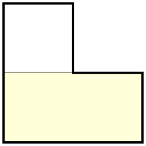 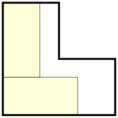 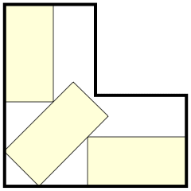 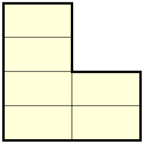 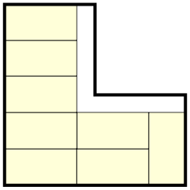 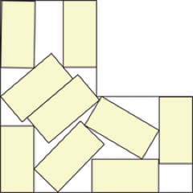 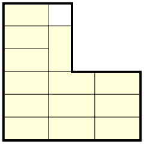 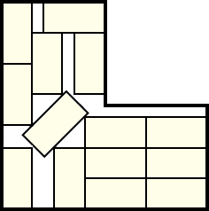 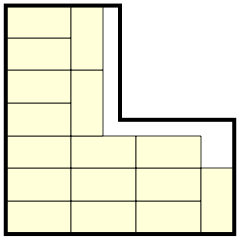 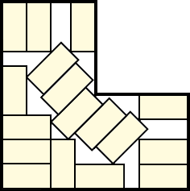 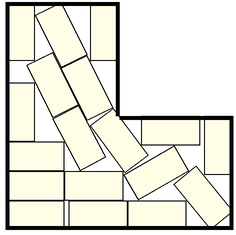 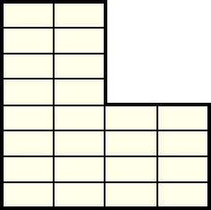
1.
s = 1
Trivial.
2.
s = 3/2 = 1.5
Trivial.
3.
s = (6+√2)/4 = 1.853+
Found by Erich Friedman in April 2026.
4.-6..
s = 2
Trivial.
7.-8.
s = 5/2 = 2.5
Trivial.
9.
s = 3/2 + √2 = 2.914+
Found by Erich Friedman in April 2026.
10.-13.
s = 3
Trivial.
14.
s = 3+√2/4 = 3.353+
Found by Maurizio Morandi in April 2026.
15.-16.
s = 7/2 = 3.5
Trivial.
17.
s = (10+9√2)/6 = 3.787+
Found by Maurizio Morandi in April 2026.
18.
s = (11+6√2)/5 = 3.897+
Found by Maurizio Morandi in April 2026.
19.-24.
s = 4
Trivial.